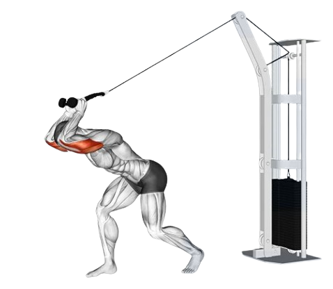

03
Tricep
- Long head: Runs from the shoulder blade (scapula) down along the length of the humerus (upper arm bone). It is the largest of the three heads and plays a significant role in shoulder and elbow extension. This head also contributes to shoulder stability as it crosses the shoulder joint..

- Lateral head: Located on the outer side of the back of the arm, it originates from the upper part of the humerus. The lateral head is primarily active during high-intensity or heavy resistance movements, contributing to the overall definition and width of the arm.
- Medial head: Situated on the inner side of the back of the arm, it lies deeper compared to the other two heads. It originates from the lower part of the humerus and is often called the "workhorse" of the triceps because it is active during both light and heavy resistance exercises
- Tricep Pushdown
- Overhead Tricep Extension
- Single Arm Cross Body Tricep Extension
3x10-12 (3 sets, 10-12 repitions)
The tricep pushdown uses a cable machine to train the tricep heads, with the medial and
lateral heads mainly being targeted. The exercise involves pushing weight from around chest
height down to the upper thigh. Both a straight bar and rope attachment can be used for this
exercise.
With free weights, the tension is often reduced during the eccentric part of the movement
(when the weight goes with gravity). Because the centre of gravity is different with a cable
machine, tension is placed on the triceps throughout the entire movement, with greater focus
on the eccentric portion of the movement compared to free weights, which can be beneficial
for strength and hypertrophy.

The tricep pushdown uses a cable machine to train the tricep heads, with the medial and lateral heads mainly being targeted. The exercise involves pushing weight from around chest height down to the upper thigh. Both a straight bar and rope attachment can be used for this exercise.
With free weights, the tension is often reduced during the eccentric part of the movement (when the weight goes with gravity). Because the centre of gravity is different with a cable machine, tension is placed on the triceps throughout the entire movement, with greater focus on the eccentric portion of the movement compared to free weights, which can be beneficial for strength and hypertrophy.
3x10-12 (3 sets, 10-12 repitions)
The main function of the triceps is to extend the elbow, moving the forearm away from
the upper arm. The overhead tricep extension trains this movement in an overhead
position, targeting all heads of the tricep with a particular focus on the long head,
and helping to strengthen shoulder stability.
The overhead tricep extension is usually performed with dumbbells, and can be done as a
single arm variation or bilateral. The cable machine can also be used for this movement,
which can be a good way to increase the challenge as the machine provides constant
tension to the muscles and highlights the eccentric portion of the movement which can
sometimes be neglected. Either ropes or a straight bar can be used.

The main function of the triceps is to extend the elbow, moving the forearm away from the upper arm. The overhead tricep extension trains this movement in an overhead position, targeting all heads of the tricep with a particular focus on the long head, and helping to strengthen shoulder stability.
The overhead tricep extension is usually performed with dumbbells, and can be done as a single arm variation or bilateral. The cable machine can also be used for this movement, which can be a good way to increase the challenge as the machine provides constant tension to the muscles and highlights the eccentric portion of the movement which can sometimes be neglected. Either ropes or a straight bar can be used.
3x10-12 (3 sets, 10-12 repitions)
The single-arm cross-body tricep extension is an isolation exercise designed to target the triceps, specifically focusing on the long head of the muscle. In this movement, you use one arm at a time to lift a weight across your body. Starting with the weight in one hand, your arm is bent and positioned across your torso. From there, you extend your arm upward and across the body, straightening it to engage the tricep fully. This controlled motion isolates the triceps.
This exercise is effective for building strength and definition in the triceps, making it a popular choice for improving arm aesthetics and enhancing upper body strength. It can also improve functional strength by mimicking movements that require pushing or extending the arm. Additionally, using one arm at a time helps address muscle imbalances, ensuring both arms develop equally.

The single-arm cross-body tricep extension is an isolation exercise designed to target the triceps, specifically focusing on the long head of the muscle. In this movement, you use one arm at a time to lift a weight across your body. Starting with the weight in one hand, your arm is bent and positioned across your torso. From there, you extend your arm upward and across the body, straightening it to engage the tricep fully. This controlled motion isolates the triceps.
This exercise is effective for building strength and definition in the triceps, making it a popular choice for improving arm aesthetics and enhancing upper body strength. It can also improve functional strength by mimicking movements that require pushing or extending the arm. Additionally, using one arm at a time helps address muscle imbalances, ensuring both arms develop equally.